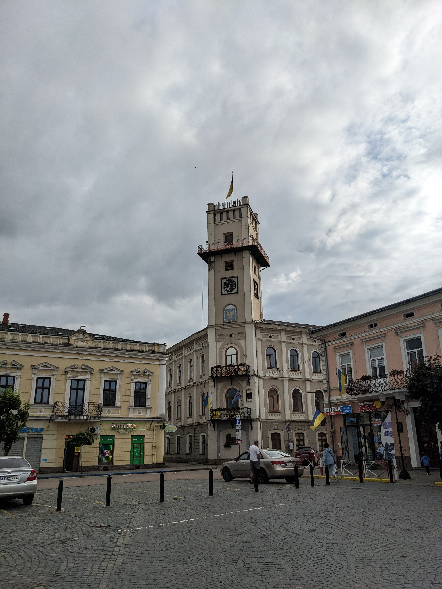
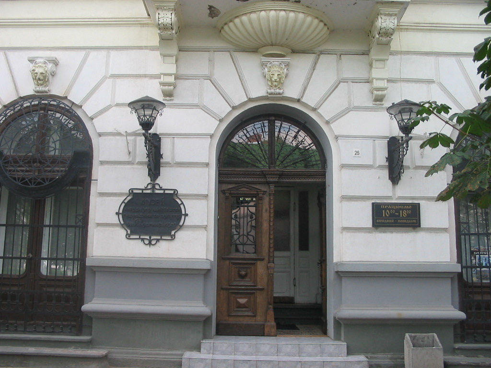

Сіль і перша згадка
Історична довідка міської ради пов’язує першу літописну згадку про Коломию 1241 року з коломийською сіллю. За коротким рядком літопису стоїть місто зі своєю довгою історією та торговими зв’язками.
Читати історію містаПрикарпаття · Україна
Коломия відкривається не поспіхом: у силуетах історичних будівель, музейних залах і візерунках, у яких кожна лінія має власний ритм. Цей маршрут допоможе побачити місто уважніше й скласти свій культурний день.

Фото: Bektour · CC BY-SA 4.0 ↗Коломия — місто, у якому знайомство з Прикарпаттям починається з короткої прогулянки. Центр запрошує не ставити собі забагато цілей: затриматися біля фасаду, зазирнути до музею, роздивитися орнамент і дати вулицям задати власний темп.
Тут поруч існують різні шари історії: міська архітектура, культурні осередки та традиції Гуцульщини й Покуття. За один день неможливо побачити все — зате можна знайти кілька деталей, через які місто запам’ятається особисто.
Відкрити туристичний порталписанок і декоративних яєць, за даними туристичного порталу міста, зібрано в колекції Музею писанкового розпису
Сайт музею «Писанка»Коломия розповідає про себе поступово: через згадки в літописах, міське середовище та музейні колекції.
Історична довідка міської ради пов’язує першу літописну згадку про Коломию 1241 року з коломийською сіллю. За коротким рядком літопису стоїть місто зі своєю довгою історією та торговими зв’язками.
Читати історію містаМіські матеріали описують архітектурний шарм Коломиї як сформований на межі XIX і XX століть. Під час прогулянки звертай увагу не лише на окремі будівлі, а й на ритм вулиці: фасади, вікна, входи та пропорції.
Джерело про архітектуруУ музеях важливі не лише рідкісні речі, а й зв’язки між ними: матеріали, майстерність, мотиви та місце предмета в житті громади. Так культурна спадщина перетворюється з переліку експонатів на історії, які можна уявити.
Що побачити в КоломиїІсторичні відомості подано за матеріалами міської ради та туристичного порталу. Відкрий першоджерела за посиланнями, щоб дізнатися більше.
Спокійний маршрут, який поєднає архітектуру, мистецтво та історію. Це орієнтир для планування дня: порядок і тривалість зупинок можна змінити під власний темп.
Початок прогулянки
Почни знайомство з центральної частини міста. Ратуша допоможе зорієнтуватися, а площа стане зручним місцем, щоб сповільнитися й роздивитися, як історичне середовище поєднується з повсякденним життям Коломиї.
На що звернути увагу: оглянь фасади довкола площі та поміть деталі, які легко пропустити дорогою — лінії карнизів, вікон і входів.
МІСЦЕЗНАХОДЖЕННЯПрокласти маршрутМистецтво та символи
Музейне приміщення саме нагадує велетенську писанку, а всередині розкривається цілий світ технік, кольорів і регіональних мотивів. В експозиції представлені писанки з різних куточків України та інших країн.
Як дивитися: обери кілька орнаментів, порівняй ритм ліній і кольори. Перед візитом перевір актуальні умови, виставки та можливість екскурсії.
ОФІЦІЙНИЙ РЕСУРССайт музею «Писанка»Традиції краю
У колекціях народного мистецтва можна простежити, як повсякденні речі стають носіями пам’яті. Різьблення, тканини, кераміка, одяг і предмети побуту розповідають про майстерність та уявлення людей різних поколінь.
Порада для огляду: не поспішай переходити від вітрини до вітрини — обери один предмет і придивися до матеріалу, орнаменту та слідів ручної роботи.
ТУРИСТИЧНИЙ ПОРТАЛДеталі про музейФінал подорожі
Заверши музейну частину маршруту історією самого міста. Документи, світлини й предмети побуту допомагають пов’язати побачене на вулицях із людьми та подіями, які формували Коломию.
Перед відвідуванням: уточни, яка експозиція відкрита та чи потрібен попередній запис.
ТУРИСТИЧНИЙ ПОРТАЛДеталі про музейМаршрут — гнучка навчальна пропозиція, а не обіцянка точного часу в дорозі. Перевір графіки, квитки, умови відвідування та можливі зміни на офіційних сторінках; між зупинками залишай запас часу для спонтанних відкриттів.
Роздивись, як лінії та кольори складаються в історії й символи. Порівняй різні способи розпису й обери мотив, який хочеться запам’ятати.
Звертай увагу на фасади, площі й будівлі в самому серці міста. Придивися до вікон, ліній карнизів, входів і пропорцій — саме такі деталі створюють характер вулиці.
Познайомся з ремеслами та культурою регіону через музейні колекції. Звертай увагу на матеріали, ручну роботу й те, як практичні речі стають носіями пам’яті.

Музеї та спадщина
У музеях Коломиї можна знайомитися з історією та народним мистецтвом не лише через дати, а й через предмети, орнаменти, фотографії та історії людей. Це хороший спосіб зрозуміти, чим живе культурна пам’ять Гуцульщини й Покуття.
У Музеї писанкового розпису експозиція показує писанки з різних регіонів України та світу. У Музеї народного мистецтва Гуцульщини та Покуття зверни увагу на ремесла й предмети побуту. В обох випадках спробуй не просто оглянути колекцію, а знайти деталь, яку захочеться запам’ятати.
У 2000 році для Музею писанкового розпису звели окрему будівлю у формі писанки; музей вказує її висоту — 13 метрів. Тож упізнаваний силует у центрі міста — водночас архітектурний знак і частина історії самої музейної установи.
Джерело: історична довідка музею ↗
Дізнатися про музей Гуцульщини та ПокуттяНехай маршрут буде гнучким: місто краще відкривати у власному темпі.
Музеї можуть мати різні години роботи та вихідні. Перед виїздом перевір актуальні умови на офіційних сторінках.
Перейти на сайт музеюПознач основні зупинки в мапі заздалегідь. Послідовність можна змінити, якщо захочеш довше затриматися в музеї.
Відкрити портал містаНе плануй кожну хвилину: прогулянка центральними вулицями та коротка пауза на каву теж частина подорожі.
Відкрити мапу Коломиї01 Відкрий офіційні сторінки й перевір, що саме працює в день поїздки.
02 Збережи потрібні локації на мапі та уточни, чи потрібне попереднє бронювання.
03 Залиши в маршруті вільний час — на дорогу, відпочинок і несподівані місця.
Це навчальний туристичний концепт. Графіки, ціни, транспорт і доступність можуть змінюватися — звіряй їх безпосередньо перед поїздкою.
Твоя наступна подорож
Почни з маршруту, а далі дозволь місту здивувати тебе.